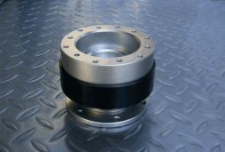
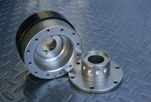
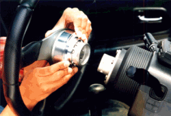

|
|
|
| ステアリングボスの上に装着するだけで、ワンタッチでステアリングホイールを脱着できるシステムです。 取り外しは、本体下部を手前にスライドするプル方式で簡単に脱着が可能です。ホーン接点も同時に脱着を行います。 ジョイント部に１０個のボールを使用したボールロックを採用することで、装着時のステアリングのがたつきを防止しています。 ジョイント部の１０個のボールを６：４で配列しているのでセンターがずれることはありません。 ワークスベル製ステアリングボスすべてに対応します。 （モモピッチのステアリングボスに取付可能ですが高度及び耐久性等の問題により ワークスベル製ステアリングボスに装着のみ保証の対象といたします。） 専用のショートタイプボスを近日発売予定。 |
|
   |
|
| Ｐｏｉｎｔ １ 安全性 | |
| 車検対応です。（重要保安部品） １０個のボールを使用したボールロックを採用することで、ステアリング装着時のがたつきを防止しています。 |
|
|
Ｐｏｉｎｔ ２ 乗降り |
|
| ２シーターなど運転席が狭い車は、ステアリングを外せば乗降りが楽にできます。 セーフティロック機構により運転中に不意に取り外れることはありません。 |
|
| Ｐｏｉｎｔ ３ 整備性 | |
| 運転席周辺の整備をするときにステアリングを外すことで作業効率が上がります。 | |
| Ｐｏｉｎｔ ４ スペーサー機能 | |
| 本製品を装着するとステアリングが約60ｍｍ運転者に近づきます。 | |
| Ｐｏｉｎｔ ５ 盗難防止 | |
| 駐車時にステアリングを外しておけば車両盗難防止になります。 | |
| Ｐｏｉｎｔ ６ 品質 | |
| 高品質のアルミニウム等を使用し、硬質アルマイト処理を施しました。 | |
|
|
|
| 株式会社 ワークスベル 東京都世田谷区野沢2-14-3 ＴＥＬ：03-3410-1411 ＦＡＸ：03-3410-7600 | |